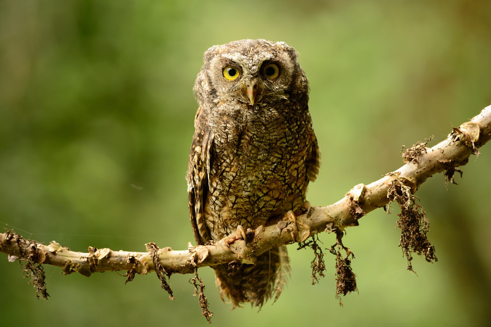
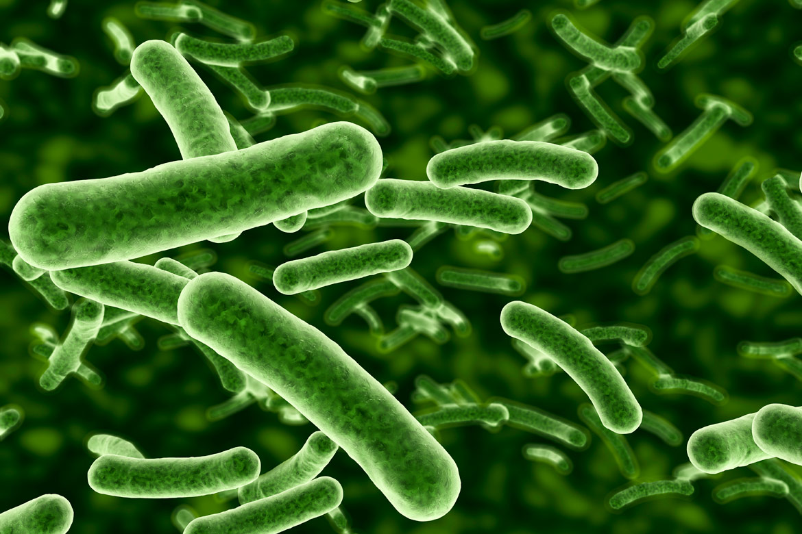

Uppdaterad: 5 OKTOBER 2021 Publicerad: 4 OKTOBER 2021 De får årets Nobelpris i medicin. David Julius och Ardem Patapoutian tilldelas årets Nobelpris i fysiologi eller medicin. De får priset för sina upptäckter av receptorer för temperatur och beröring. David Julius har använt växtämnet kapsaicin som finns i chili och som framkallar känslan av hetta. Med hjälp av chili kunde David Julius upptäcka receptorn TRPV1 som aktiveras av smärtsam värme. Read more
 Uppdaterad 8 NOVEMBER 2021 Publicerad: 7 NOVEMBER 2021 Fågelkvittret blir glesare. Färre fåglar och färre fågelsorter ger ett förenklat ljudlandskap, menar en ny studie. Det här är både en förlust för mångfald och för människan som förlorar sin koppling till naturen. Read more
Svenska forskarnas unika bilder på vulkanutbrottet: “Som en apokalyps”. Från världens renaste luft till väldigt, väldigt smutsig. Forskarnas solteleskop övertäcks med aska var och varannan dag sedan vulkanutbrottet på La Palma.
 Här är tarmbakterien som kan förklara antibiotikaresistens. Tuffa bakterier ska besegras i framtiden. Nya bilder på en bakterie avslöjar tidigare okända egenskaper som kan spela avgörande roll i arbetet att bota svåra sjukdomar.